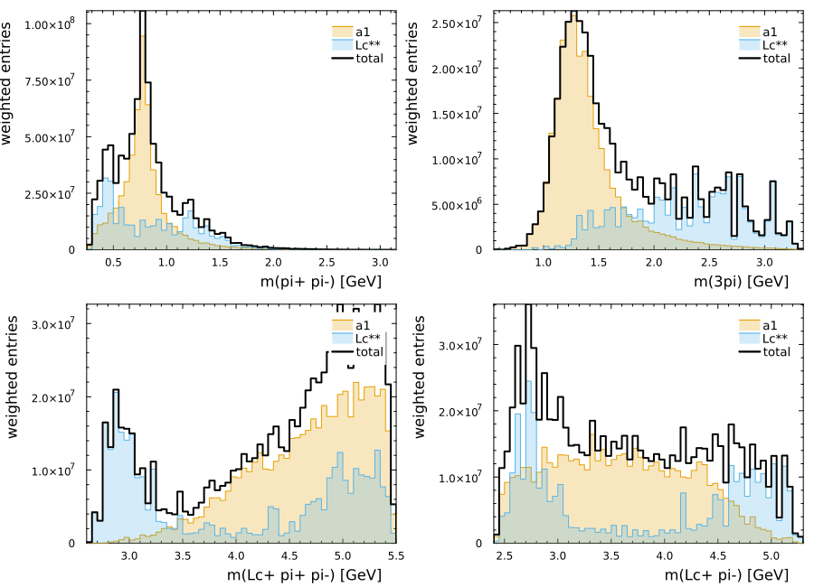
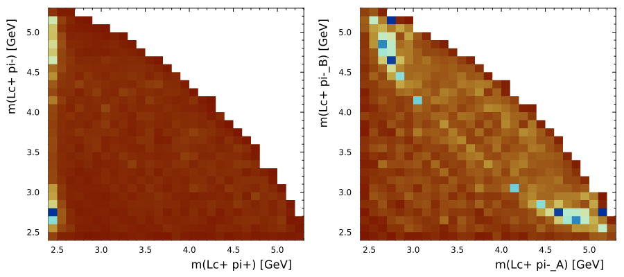

Building a full model for a decay
This page is a practical model-construction sketch. It builds a small coherent CascadeDecay model for
\[\Lambda_b^0 \to \Lambda_c^+ \pi^+ \pi^- \pi^-\]
with final-state labels
1: $\Lambda_c^+$2: $\pi^+$3: $\pi^-$4: $\pi^-$- root: $\Lambda_b^0$
The model has four channels:
- $\Lambda_b^0 \to a_1 \Lambda_c^+$, $a_1 \to \rho(23)\pi^-_4$
- $\Lambda_b^0 \to a_1 \Lambda_c^+$, $a_1 \to \rho(24)\pi^-_3$
- $\Lambda_b^0 \to \Lambda_c^{**}\pi^-_4$, $\Lambda_c^{**}\to\Sigma_c(12)\pi^-_3$
- $\Lambda_b^0 \to \Lambda_c^{**}\pi^-_3$, $\Lambda_c^{**}\to\Sigma_c(12)\pi^-_4$
The two $a_1$ channels and the two $\Sigma_c$ channels are written explicitly so a fitter can tie or release their couplings later.
Procedural construction
using CascadeDecays
using HadronicLineshapes
using ThreeBodyDecays: @jp_str
# External particles, in the final-state order used by the topology labels.
m_pi_plus = 0.13957039
m_pi_minus = 0.13957039
m_lc = 2.28646
m_lb = 5.61960
quantum = SystemSpinParities("1/2+", "0-", "0-", "0-"; jp0="1/2+")
# Placeholder resonance parameters. Replace these with the values used in the
# analysis model or expose them as fit parameters.
rho_770 = BreitWigner(0.77526, 0.1491)
a1_1260 = BreitWigner(1.23, 0.42)
sigmac_2455 = BreitWigner(2.45397, 20 * 0.00189) # made wider 0.00189
lcstar = BreitWigner(2.86, 5 * 0.067) # made wider
# 1. a1 -> rho(23) pi4
topology_a1_23 = DecayTopology((1, ((2, 3), 4)))
propagators_a1_23 = (
((2, 3), 4) => Propagator(jp"1+", a1_1260),
(2, 3) => Propagator(jp"1-", rho_770),
)
chain_a1_23 = minimal_ls_decay_chain(topology_a1_23, quantum, propagators_a1_23)
# 2. a1 -> rho(24) pi3
topology_a1_24 = DecayTopology((1, ((2, 4), 3)))
propagators_a1_24 = (
((2, 4), 3) => Propagator(jp"1+", a1_1260),
(2, 4) => Propagator(jp"1-", rho_770),
)
chain_a1_24 = minimal_ls_decay_chain(topology_a1_24, quantum, propagators_a1_24)
# 3. Lc** -> Sigma_c(12) pi3, with pi4 as the spectator
topology_sigmac_123 = DecayTopology((((1, 2), 3), 4))
propagators_sigmac_123 = (
((1, 2), 3) => Propagator(jp"3/2+", lcstar),
(1, 2) => Propagator(jp"1/2+", sigmac_2455),
)
chain_sigmac_123 = minimal_ls_decay_chain(topology_sigmac_123, quantum, propagators_sigmac_123)
# 4. Lc** -> Sigma_c(12) pi4, with pi3 as the spectator
topology_sigmac_124 = DecayTopology((((1, 2), 4), 3))
propagators_sigmac_124 = (
((1, 2), 4) => Propagator(jp"3/2+", lcstar),
(1, 2) => Propagator(jp"1/2+", sigmac_2455),
)
chain_sigmac_124 = minimal_ls_decay_chain(topology_sigmac_124, quantum, propagators_sigmac_124)At this point all channels are ordinary DecayChain values. The construction is explicit but repetitive: each channel needs a bracket topology, a tuple of bracket-addressed propagators, and one call to minimal_ls_decay_chain. This is useful for auditing the model, but it also shows where a future convenience layer could reduce boilerplate for charge-reflected channels.
The two $a_1$ chains should share a production coupling if the two identical $\pi^-$ assignments are symmetrized. The two $\Sigma_c$ chains are handled the same way. For now the tying is done by passing the same coefficient object in the two corresponding positions.
c_a1 = 1.0 + 0.0im
c_sigmac = 5.0 + 0.0im
model = CascadeDecay(
(chain_a1_23, chain_a1_24, chain_sigmac_123, chain_sigmac_124),
topology_a1_23;
couplings=(c_a1, c_a1, c_sigmac, c_sigmac),
names=(
"a1->rho23pi4",
"a1->rho24pi3",
"lcstar->sigmac12pi3",
"lcstar->sigmac12pi4",
),
)Each chain carries a string name. The names are stored in model.names and shown in the table-like show summary. They are mainly for selection: later we can slice out the $a_1$ and $\Lambda_c^{**}$ submodels without rebuilding chains or repeating couplings by hand.
show(model)
nothingCascadeDecay with 4 chains on (1,((2,3),4)):
name coupling topology
a1->rho23pi4 1.0 + 0.0im (1,((2,3),4))
a1->rho24pi3 1.0 + 0.0im (1,((2,4),3))
lcstar->sigmac12pi3 5.0 + 0.0im (((1,2),3),4)
lcstar->sigmac12pi4 5.0 + 0.0im (((1,2),4),3)The result is a static model description. Each DecayChain has the same external quantum numbers, but its own topology and Breit-Wigner propagators. The minimal_ls_decay_chain calls choose the first allowed LS coupling at every binary vertex from the supplied spin-parity assignments.
Quick toy spectra
The same objects are enough for quick model-shape checks. Here RamboOnDiet generates flat four-body phase-space events. Each event is weighted by
\[w = J_{\mathrm{PS}}\; I_{\mathrm{unpolarized}},\]
where J_PS is the phase-space weight returned by RamboOnDiet and I_unpolarized is unpolarized_intensity(model, point).
To make the structures visible, the toy projection also evaluates the two channel groups separately: the two $a_1$ chains and the two $\Lambda_c^{**}$ chains. The full model remains coherent, so the black total curve can include interference that is not present in the two component intensities.
using FourVectors
using Plots
using Random
using RamboOnDiet
using DataFrames
theme(:boxed)
const N_TOY_EVENTS = 50_000
rng = MersenneTwister(0x4C3B3)
generator = PhaseSpaceGenerator(
[m_lc, m_pi_plus, m_pi_minus, m_pi_minus],
m_lb,
)
task = KinematicTask(
(topology_a1_23, topology_a1_24, topology_sigmac_123, topology_sigmac_124);
reference_topology=reference_topology(model),
wigner_finals=(1,),
)The two component models are slices of the full model. They reuse the same chains and couplings, so they are not rebuilt by hand. They are also not a partition of the coherent intensity; they are diagnostic projections of the two channel families evaluated with the same kinematic task as the full model.
is_a1 = startswith.(model.names, "a1")
is_lcstar = startswith.(model.names, "lcstar")
model_a1 = model[is_a1]
model_lcstar = model[is_lcstar]
(length(model_a1), model_a1.names, length(model_lcstar), model_lcstar.names)
nothingThe event sample is flat phase space. Each row stores the four-momenta, phase-space weight, component and total intensities, and a small set of invariant-mass columns computed with FourVectors.
data = DataFrame(
:event => [rand(rng, generator) for _ in 1:N_TOY_EVENTS])
select!(data, :event => ByRow() do event
(; event.momenta, event.weight)
end => AsTable)
transform!(data, [:momenta, :weight] => ByRow() do momenta, weight
point = KinematicPoint(task, Tuple(momenta))
a1 = unpolarized_intensity(model_a1, point)
lcstar = unpolarized_intensity(model_lcstar, point)
total = unpolarized_intensity(model, point)
(;
weight_a1=a1 * weight,
weight_lcstar=lcstar * weight,
weight_total=total * weight,
)
end => AsTable)
transform!(data, :momenta => ByRow() do (Lc1, pip2, pim3, pim4)
(;
m_pip_pim_23=mass(pip2 + pim3),
m_pip_pim_24=mass(pip2 + pim4),
m_3pi=mass(pip2 + pim3 + pim4),
m_Lc_pim_13=mass(Lc1 + pim3),
m_Lc_pim_14=mass(Lc1 + pim4),
m_Lc_pip_12=mass(Lc1 + pip2),
m_Lc_pip_pim_123=mass(Lc1 + pip2 + pim3),
m_Lc_pip_pim_124=mass(Lc1 + pip2 + pim4),
)
end => AsTable)
select!(data, Not(:momenta))
nothingFor observables involving one of the two identical $\pi^-$ labels, both label assignments are filled into the same projection with repeated weights. The component histograms are filled to zero, while the full coherent model is drawn as a black step line. This keeps the interference-sensitive total visually separate from the two diagnostic component intensities.
plot(
projection(data, (:m_pip_pim_23, :m_pip_pim_24); xlabel="m(pi+ pi-) [GeV]", bins=100),
projection(data, (:m_3pi,); xlabel="m(3pi) [GeV]", bins=100),
projection(data, (:m_Lc_pip_pim_123, :m_Lc_pip_pim_124); xlabel="m(Lc+ pi+ pi-) [GeV]", bins=100),
projection(data, (:m_Lc_pim_13, :m_Lc_pim_14); xlabel="m(Lc+ pi-) [GeV]", bins=100),
layout=(2, 2),
size=(900, 650),
ylabel="weighted entries",
)
There is no $\Lambda_c^+\pi^+\pi^+$ spectrum for this final state; the three-body baryonic plot above uses the two available $\Lambda_c^+\pi^+\pi^-$ combinations.
Two Dalitz projections probe the same symmetrization more directly. The $\Lambda_c^+\pi^+\pi^-$ plot uses m_Lc_pip_12 against the two $\Lambda_c^+\pi^-$ assignments. The $\Lambda_c^+\pi^-\pi^-$ plot uses m_Lc_pim_13 and m_Lc_pim_14, together with their reflection $(x, y) \leftrightarrow (y, x)$, to visualize symmetry under exchange of the identical pions.
plot(
dalitz_projection(
data,
:m_Lc_pip_12,
(:m_Lc_pim_13, :m_Lc_pim_14);
xlabel="m(Lc+ pi+) [GeV]",
ylabel="m(Lc+ pi-) [GeV]",
),
reflect_dalitz_projection(
data,
:m_Lc_pim_13,
:m_Lc_pim_14;
xlabel="m(Lc+ pi-_A) [GeV]",
ylabel="m(Lc+ pi-_B) [GeV]",
),
layout=(1, 2),
size=(900, 400),
bottom_margin=5Plots.PlotMeasures.mm,
left_margin=5Plots.PlotMeasures.mm
)
What the example exposes
This example is intentionally procedural. It makes the current API friction visible:
- resonance labels live in variable names, not in the model object;
- the two symmetrized channel pairs are tied by manually repeating couplings;
- every topology and propagator list is written by hand;
- there is no helper yet for “build all charge permutations of this subdecay”.
Once the full model is assembled, named indexing already covers one common workflow: selecting channel families (model[is_a1], model[is_lcstar]) and evaluating their intensities with the same kinematic task as the coherent sum.
Those are useful pressure points for the next convenience layer. The low-level objects are explicit enough to audit, but a production analysis will likely want a small channel builder on top of them.